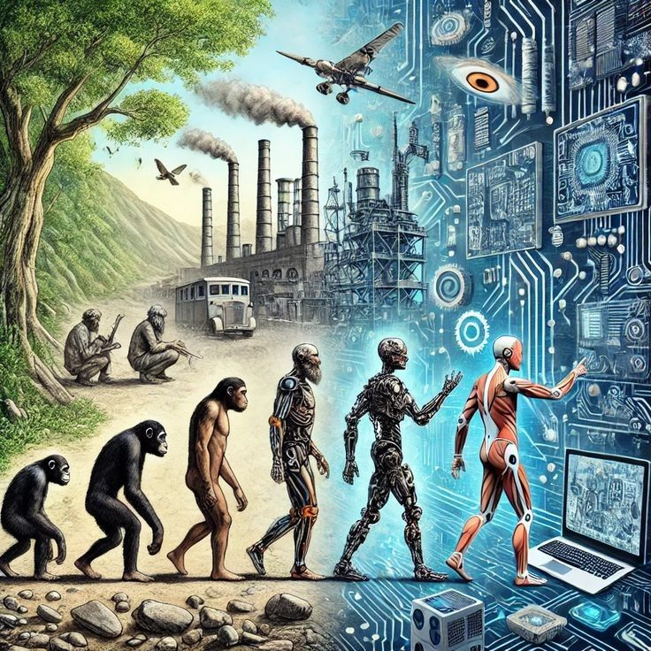
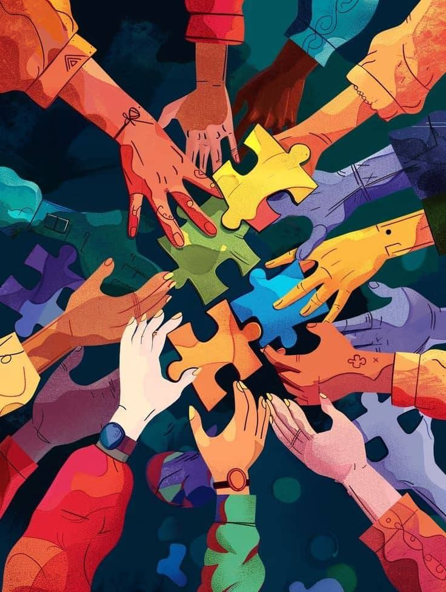

Navegação Teclado
Foco Visível & Navegação Sem Mouse
Garantia de navegação por tecla Tab para pessoas com deficiência motora ou visual.
A verdadeira inovação digital não deixa ninguém para trás. Criar um ambiente acessível significa garantir que pessoas cegas, surdas, com mobilidade reduzida ou neurodivergentes possam navegar, aprender e trabalhar com plena autonomia.
3+
Imagens acessíveis
2
Mídias com transcrição
100%
Navegável por teclado

Da evolução biológica à evolução digital: a tecnologia como nova etapa da inclusão humana.

União e diversidade: a colaboração de diferentes perspectivas na sociedade.A acessibilidade digital não é um luxo técnico, mas uma garantia constitucional de direitos fundamentais.
Construir sites acessíveis exige que desenvolvedores compreendam como as tecnologias assistivas interpretam o código-fonte. O uso de HTML semântico é o pilar fundamental dessa construção.
Tags como <main>,
<nav> e
<article> orientam leitores de tela.
Descrições em imagens e papéis ARIA corretos informam estados de elementos complexos.
 A sobrecarga digital e a necessidade de interfaces mais
acessíveis e organizadas.
A sobrecarga digital e a necessidade de interfaces mais
acessíveis e organizadas.
A IA generativa oferece possibilidades sem precedentes para remover barreiras. Mas o fator humano continua essencial para evitar erros e viéses.
Textos alternativos automáticos, síntese de áudio, tradução para Libras e simplificação de linguagem.
A IA pode gerar descrições genéricas ou preconceituosas. Revisar o conteúdo é dever ético da equipe.
Todas as imagens informativas possuem texto alternativo objetivo e recurso integrado de audiodescrição em texto e síntese de voz.
Garantia de navegação por tecla Tab para pessoas com deficiência motora ou visual.
Softwares como NVDA e TalkBack leem o conteúdo estruturado para pessoas cegas.
Acomodação visual para pessoas surdas ou com deficiência auditiva em multimídia.
Produzidos com apoio de IA. Logo abaixo de cada player, a transcrição integral está disponível em texto.
✓ Vídeo Tecnologia para Todos — reproduza usando os controles abaixo.
O vídeo analisa a relação entre inteligência artificial e acessibilidade digital no Brasil. Atualmente, a exclusão na web é preocupante: apenas 2,9% dos sites brasileiros são totalmente acessíveis, o que impede milhões de pessoas de aceder a serviços essenciais. Para combater este problema, a inteligência artificial surge como uma aliada, permitindo traduzir conteúdos para Libras (com ferramentas como Hand Talk e VLibras), criar textos alternativos em imagens e gerar audiodescrições. Contudo, o vídeo sublinha que a tecnologia não resolve tudo sozinha. O fator humano é indispensável:
✓ Episódio final do podcast — cerca de 2 minutos e 36 segundos. — Nova voz em português.
Olá! Seja bem-vindo ao podcast Falando Sobre Inclusão, do projeto Luncy IA.
Hoje vamos conversar sobre um tema que está cada vez mais presente no nosso dia a dia: tecnologia, inteligência artificial e inclusão.
Quando falamos em tecnologia, muitas vezes pensamos em celulares, computadores, aplicativos e inteligência artificial. Mas existe uma pergunta importante: será que toda essa tecnologia está realmente disponível para todas as pessoas?
A acessibilidade digital busca justamente diminuir essas barreiras. Uma pessoa cega, por exemplo, pode utilizar leitores de tela para navegar em um site. Pessoas com baixa visão podem precisar de fontes maiores e de bom contraste. Pessoas surdas podem depender de legendas e transcrições. Já pessoas com mobilidade reduzida podem utilizar teclado, comandos de voz ou outros recursos para interagir com a tecnologia.
Por isso, acessibilidade não deve ser tratada como um detalhe ou como um recurso extra. Ela deve fazer parte do planejamento desde o começo de um projeto.
E onde entra a inteligência artificial?
A IA pode ajudar muito nesse processo. Ela pode contribuir para gerar descrições de imagens, transformar fala em texto, produzir legendas, apoiar ferramentas de tradução e personalizar experiências digitais. Porém, a inteligência artificial precisa ser usada com responsabilidade. Ela não substitui a participação humana e também não garante, sozinha, que uma solução seja acessível.
Outro ponto importante é a autonomia. Uma tecnologia inclusiva é aquela que permite que cada pessoa consiga realizar suas atividades com mais independência, segurança e dignidade.
No final das contas, inovar não significa apenas criar algo novo. Significa criar soluções que possam ser utilizadas por mais pessoas.
Tecnologia só é inovação de verdade quando inclui todo mundo.
Obrigado por ouvir o podcast Falando Sobre Inclusão. Esperamos que este conteúdo ajude você a olhar para a tecnologia de uma maneira mais inclusiva, acessível e humana.